6 Logistische Regression
6.1 Setup und Pakete laden
Öffnen Sie das R Projekt, das Sie für diesen Kurs angelegt haben. Öffnen Sie hierfür RStudio und benutzen Sie die Schaltfläche oben rechts oder navigieren Sie zu Ihrem Kursverzeichnis und klicken Sie auf die .Rproj Datei.
Laden Sie das tidyverse:
Laden Sie außerdem die folgenden Data Frames:
6.2 Von der linearen zur logistischen Regression
Die logistische Regression ist (genau wie die lineare Regression) ein statistischer Test, der prüft, ob eine abhängige Variable von einem unabhängigen Faktor beeinflusst wird. Der Unterschied zur linearen Regression ist, dass die abhängige Variable in der logistischen Regression immer kategorial und binär ist und die unabhängige Variable entweder numerisch (kontinuierlich) oder kategorial sein kann. Mit der logistischen Regression können wir unter der Annahme eines Zusammenhangs zwischen abhängiger und unabhängiger Variable die Wahrscheinlichkeit eines bestimmten Wertes schätzen.
Beispiele:
- Inwiefern wird die Vokalisierung von einem finalen /l/ im Englischen (feel vs. ‘feeu’)
vom Dialekt beeinflusst?
- Abhängige Variable: Vokalisierung (kategorial mit zwei Stufen: ja, nein)
- Unabhängige Variable: Dialekt (kategorial mit zwei oder mehr Stufen)
- Wird “passt” in Augsburg im Vergleich zu München eher mit /ʃ/ produziert?
- Abhängige Variable: Frikativ (kategorial mit zwei Stufen: /s/, /ʃ/)
- Unabhängige Variable: Dialekt (kategorial mit zwei Stufen: Augsburg, München)
- Der Vokal /a/ in /lam/ wird mit unterschiedlichen Dauern synthetisiert und Hörern vorgespielt. Hören die Probanden eher “lahm” (langes /a:/) als “Lamm” (kurzes /a/) mit zunehmender Dauer des Vokals?
- Abhängige Variable: Vokal (kategorial mit zwei Stufen: /a/, /a:/)
- Unabhängige Variable: Dauer (kontinuierlich)
Da die abhängige Variable in der logistischen Regression immer ein Faktor mit zwei Stufen ist, kann man diese Stufen auch als 1 und 0 kodieren und fragen, was auf der Grundlage der gegebenen Daten die Wahrscheinlichkeit \(P\) ist, dass die abhängige Variable \(y\) den Wert 1 annimmt: \(P(y = 1)\). Genauso können wir nach der Wahrscheinlichkeit \(Q\) fragen, dass \(y\) den Wert 0 annimmt: \(1 - P(y = 1)\). Für das dritte Beispiel oben würde das folgendes bedeuten:
- \(P\): Wahrscheinlichkeit, dass Probanden mit steigender Vokaldauer “lahm” hören (“Erfolg”, denn auf der Grundlage unseres Wissens oder unserer bisherigen Erkenntnisse z.B. aus anderen Experimenten gehen wir davon aus, dass die Probanden bei steigender Vokaldauer “lahm” hören sollten)
- \(Q\): Wahrscheinlichkeit, dass Probanden mit steigender Vokaldauer “Lamm” hören (“Misserfolg”, denn wieder auf der Grundlage unserer bisherigen Erkenntnisse zu diesem Sachverhalt gehen wir davon aus, dass es seltsam wäre, wenn die Probanden bei steigender Vokaldauer “Lamm” hören würden)
Die Division (das Verhältnis) von \(P\) und \(Q\) wird als Odds (Gewinnchancen) bezeichnet:
\(Odds = \frac{P(y = 1)}{1 - P(y = 1)} = \frac{P}{Q}\)
Die Gewinnchancen liegen immer in einem Wertebereich von 0 bis unendlich. Nun könnte man überlegen, einfach die Odds als abhängige Variable in einer linearen Regression zu verwenden, denn jetzt handelt es sich ja nicht mehr um eine kategoriale, binäre abhängige Variable. Das Problem ist, dass lm() nicht weiß, dass die Odds nur Werte von Null bis Unendlich annehmen können und daher auch Werte außerhalb dieses Bereichs vorhersagen würde. Außerdem sagt das Verhältnis von \(P\) und \(Q\) nichts darüber aus, wie viele Beobachtungen in die Berechnung dieses Verhältnisses eingeflossen sind (je mehr Beobachtungen, desto aussagekräftiger ist die berechnete Gewinnchance). Wir brauchen also eine Funktion, die uns die Odds in etwas umwandelt, dass zum einen in den Wertebereich \(±\)unendlich fällt und zum anderen die Proportionen anhand der Anzahl der Beobachtungen gewichtet. Diese Funktion heißt allgemein Linkfunktion (link function) und ist im Fall der logistischen Regression die Logit Transformation der Odds. Der Logit ist der Logarithmus der Gewinnchancen und wird deshalb auch als log odds bezeichnet:
\(log(\frac{P}{Q})\)
6.2.1 Ein Beispiel für \(P\), \(Q\) und Logit
Zwischen 1950 und 2005 sollen Wörter wie lost in einer aristokratischen Form des Englischen (Received Pronunciation) immer weniger mit einem hohen Vokal /lo:st/ und zunehmend mit einem tiefen Vokal /lɔst/ produziert worden sein. Für diese Vermutung haben wir Daten im Data Frame ovokal:
## Jahr Vokal Vpn
## 1 1950 hoch S1
## 2 1950 hoch S2
## 3 1950 hoch S3
## 4 1950 hoch S4
## 5 1950 hoch S5
## 6 1950 hoch S6Unsere Forschungsfrage lautet: Wird die Aussprache des Vokals (hoch vs. tief = abhängige Variable) vom Jahr (1950… 2005 = unabhängige numerische Variable) beeinflusst?
Wir wollen \(P\) (die Wahrscheinlichkeit, dass der Vokal tief produziert wurde) und \(Q\) (die Wahrscheinlichkeit, dass der Vokal hoch produziert wurde) pro Jahr berechnen. Unseren bisherigen Erkenntnissen nach ist die Richtung der Veränderung von der hohen hin zur tiefen Aussprache des Vokals /o/, also bezeichnen wir es als “Erfolg”, wenn der Vokal tief produziert wurde, und als “Misserfolg”, wenn er hoch produziert wurde. Wir kodieren nun als ersten Schritt in der Berechnung von \(P\) und \(Q\) tiefe und hohe Aussprache als 1 und 0, bzw. als TRUE und FALSE:
## Jahr Vokal Vpn Erfolg Misserfolg
## 1 1950 hoch S1 FALSE TRUE
## 2 1950 hoch S2 FALSE TRUE
## 3 1950 hoch S3 FALSE TRUE
## 4 1950 hoch S4 FALSE TRUE
## 5 1950 hoch S5 FALSE TRUE
## 6 1950 hoch S6 FALSE TRUEDann nehmen wir uns das erste Jahr vor, 1950, und berechnen hierfür \(P\) und \(Q\), indem wir zählen, wie viele “Erfolge” bzw. “Misserfolge” wir für dieses Jahr haben:
## [1] 5## [1] 30Das heißt im Jahr 1950 wurde der Vokal /o/ in Wörtern wie lost nur 5 Mal tief, aber 30 Mal hoch produziert. So müssten wir das jetzt für jede Stufe der unabhängigen Variable (für jede Jahreszahl) machen… Aber das wäre sehr umständlich. Wir nutzen deshalb das Paket dplyr aus dem tidyverse. Das bietet eine elegante Schreibweise und sehr viele hilfreiche Funktionen für den Umgang mit Daten.
## # A tibble: 6 × 3
## Jahr P Q
## <int> <int> <int>
## 1 1950 5 30
## 2 1960 21 18
## 3 1971 26 15
## 4 1980 20 13
## 5 1993 32 4
## 6 2005 34 2Erklärung: dplyr
Im tidyverse lassen sich Funktionen mit der Pipe %>% aneinanderhängen. Oft wird dabei zuerst der Data Frame genannt, denn danach können alle Spalten aus dem Data Frame einfach per Spaltennamen in den Funktionen verwendet werden. Im obigen Code nutzen wir zwei Funktionen nacheinander, die häufig gemeinsam verwendet werden: group_by() gruppiert die Zeilen im Data Frame nach den in den runden Klammern genannten Spalten. Bei uns wird nach der unabhängigen Variable Jahr gruppiert. Alle darauf folgenden Funktion werden nicht mehr auf den gesamten Data Frame, sondern nur noch auf die einzelnen Gruppen (Gruppe = alle Beobachtungen, die zu einer Jahreszahl gehören) angewendet. Dieser Vorgang ist quasi unsichtbar, er kommt erst durch die zweite Funktion zum Tragen.
summarise() kann verwendet werden, um zusammenfassende Funktionen wie sum(), mean(), median(), min(), max(), usw. auf Variablen anzuwenden und das Ergebnis sofort in einer neuen Spalte abzuspeichern. Bei summarise() empfehlen wir, grundsätzlich mit dplyr:: anzugeben, dass die summarise()-Funktion aus dem dplyr Paket verwendet werden soll, denn es gibt leider sogar innerhalb des tidyverse noch andere Packages, die eine summarise()-Funktion haben. In der summarise()-Funktion geben wir zuerst den Namen der neu zu erstellenden Spalte an, z.B. P, und anschließend können wir eine zusammenfassende Funktion wie sum() auf eine der Spalten in unserem Data Frame anwenden, z.B. sum(Erfolg). Das zählt dann für jede Jahreszahl, wie viele TRUE-Werte es in ovokal$Erfolg gibt.
Sie sehen, dass das Ergebnis ein Data Frame (bzw. eine tibble) mit sechs Zeilen ist, eine Zeile pro Jahr (weil wir nach Jahr gruppiert haben) und dann gibt es noch unsere zwei neu erstellten Spalten P und Q. Alle anderen Spalten aus dem ursprünglichen Data Frame wurden fallen gelassen.
Die erste Zeile in unserem neuen Data Frame df bedeutet folglich, dass /o/ im Jahr 1950 fünf Mal tief und 30 Mal hoch produziert wurde. Die zweite Zeile zeigt, dass die Probanden im Jahr 1960 den Vokal bereits öfter tief (P ist 21) als hoch (Q ist 18) produziert haben, usw.
Sie werden in diesem Kurs selbst keinen dplyr-Code schreiben müssen, aber Sie sollten ihn lesen können. In diesem Cheat Sheet finden Sie eine knappe Übersicht über dplyr und in Hadley Wickham’s Buch finden Sie sehr viele weitere Informationen und Beispiele, die Ihnen beim Umgang mit dplyr helfen werden.
Mit \(P\) und \(Q\) können wir nun die log odds (den Logit) berechnen:
## # A tibble: 6 × 4
## Jahr P Q log_odds
## <int> <int> <int> <dbl>
## 1 1950 5 30 -1.79
## 2 1960 21 18 0.154
## 3 1971 26 15 0.550
## 4 1980 20 13 0.431
## 5 1993 32 4 2.08
## 6 2005 34 2 2.83Schauen wir uns die Verteilung der log odds über die Jahrzehnte an:
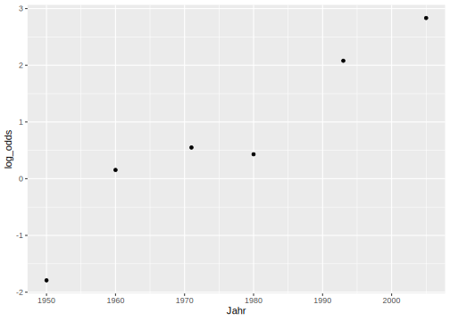
Es sind diese log odds, durch die wir mittels der logistischen Regression eine Regressionslinie legen werden. Diese Regressionslinie wird genauso definiert wie die lineare Regressionslinie, sie schätzt aber eben die log odds:
\(log(\frac{P}{Q}) = bx + k\)
Hier gilt wieder:
- \(b\) ist die Steigung
- \(x\) ist ein Wert auf der x-Achse
- \(k\) ist der y-Achsenabschnitt
Hier können wir \(b\) und \(k\) jedoch nicht so leicht berechnen wie bei der linearen Regression, d.h. wir lassen sie uns direkt schätzen.
6.2.2 Die logistische Regressionslinie
Bei der linearen Regression haben wir uns die Regressionskoeffizienten mit der Funktion lm() schätzen lassen, die dafür das least squares Verfahren benutzt. Die logistische Regressionslinie wird hingegen mit dem maximum likelihood Verfahren angenähert, das dafür sorgt, dass die geschätzten Datenpunkte des logistischen Modells so ähnlich wie möglich zu den tatsächlichen Werten sind. Zur Schätzung der Regressionskoeffizienten nutzen wir die Funktion glm(), das steht für Generalized Linear Model. Die Funktion bekommt neben der Formel y ~ x und dem Data Frame das Argument family = binomial, das der Funktion mitteilt, dass die Logit-Transformation durchgeführt werden soll. Die abhängige Variable muss ein Faktor sein; ggf. müssen Sie die Variable also mit as.factor() noch in einen Faktor verwandeln:
## [1] "character"Die Zusammenfassung dieses Modells schauen wir uns etwas später an. Zuerst zeigen wir hier noch die Alternative zu der obigen Anwendung von glm() auf den originalen Daten Frame. glm() kann auch auf \(P\) und \(Q\) aus dem zusammengefassten Data Frame df ausgeführt werden, indem \(P\) und \(Q\) durch cbind() verbunden und als abhängige Variable verwendet werden:
Wir können wieder coef() verwenden, um uns die Regressionskoeffizienten (Intercept und Slope) anzeigen zu lassen:
## (Intercept) Jahr
## -138.11742 0.07026## (Intercept) Jahr
## -138.11742 0.07026Mithilfe dieser Maße kann die gerade Regressionslinie auf die Daten im Logit-Raum überlagert werden. Dazu nutzen wir wieder die beiden Möglichkeiten aus ggplot2. Wenn geom_smooth() benutzt wird, muss method = "glm" verwendet werden, und bei geom_abline() benutzen wir die geschätzten coefs für intercept und slope.
# mit geom_smooth():
ggplot(df) +
aes(x = Jahr, y = log_odds) +
geom_point() +
geom_smooth(method = "glm", se = F)## `geom_smooth()` using formula = 'y ~ x'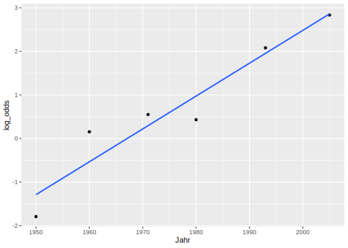
# mit geom_abline():
ggplot(df) +
aes(x = Jahr, y = log_odds) +
geom_point() +
geom_abline(intercept = coefs[1], slope = coefs[2], color = "blue")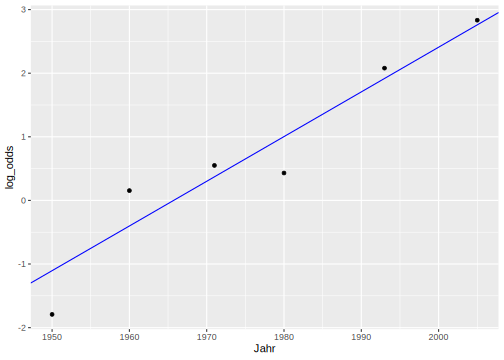
Die Werte, die durch die logistische Regression geschätzt werden, sind die log odds. Wir können wieder die Funktion predict() verwenden, um uns die geschätzten log odds anzeigen zu lassen:
## 1 2 3 4 5 6
## -1.1043 -1.1043 -1.1043 -1.1043 -1.1043 -1.1043
## 7 8 9 10 11 12
## -1.1043 -1.1043 -1.1043 -1.1043 -1.1043 -1.1043
## 13 14 15 16 17 18
## -1.1043 -1.1043 -1.1043 -1.1043 -1.1043 -1.1043
## 19 20 21 22 23 24
## -1.1043 -1.1043 -1.1043 -1.1043 -1.1043 -1.1043
## 25 26 27 28 29 30
## -1.1043 -1.1043 -1.1043 -1.1043 -1.1043 -1.1043
## 31 32 33 34 35 36
## -1.1043 -1.1043 -1.1043 -1.1043 -1.1043 -0.4017
## 37 38 39 40 41 42
## -0.4017 -0.4017 -0.4017 -0.4017 -0.4017 -0.4017
## 43 44 45 46 47 48
## -0.4017 -0.4017 -0.4017 -0.4017 -0.4017 -0.4017
## 49 50 51 52 53 54
## -0.4017 -0.4017 -0.4017 -0.4017 -0.4017 -0.4017
## 55 56 57 58 59 60
## -0.4017 -0.4017 -0.4017 -0.4017 -0.4017 -0.4017
## 61 62 63 64 65 66
## -0.4017 -0.4017 -0.4017 -0.4017 -0.4017 -0.4017
## 67 68 69 70 71 72
## -0.4017 -0.4017 -0.4017 -0.4017 -0.4017 -0.4017
## 73 74 75 76 77 78
## -0.4017 -0.4017 0.3712 0.3712 0.3712 0.3712
## 79 80 81 82 83 84
## 0.3712 0.3712 0.3712 0.3712 0.3712 0.3712
## 85 86 87 88 89 90
## 0.3712 0.3712 0.3712 0.3712 0.3712 0.3712
## 91 92 93 94 95 96
## 0.3712 0.3712 0.3712 0.3712 0.3712 0.3712
## 97 98 99 100 101 102
## 0.3712 0.3712 0.3712 0.3712 0.3712 0.3712
## 103 104 105 106 107 108
## 0.3712 0.3712 0.3712 0.3712 0.3712 0.3712
## 109 110 111 112 113 114
## 0.3712 0.3712 0.3712 0.3712 0.3712 0.3712
## 115 116 117 118 119 120
## 0.3712 1.0036 1.0036 1.0036 1.0036 1.0036
## 121 122 123 124 125 126
## 1.0036 1.0036 1.0036 1.0036 1.0036 1.0036
## 127 128 129 130 131 132
## 1.0036 1.0036 1.0036 1.0036 1.0036 1.0036
## 133 134 135 136 137 138
## 1.0036 1.0036 1.0036 1.0036 1.0036 1.0036
## 139 140 141 142 143 144
## 1.0036 1.0036 1.0036 1.0036 1.0036 1.0036
## 145 146 147 148 149 150
## 1.0036 1.0036 1.0036 1.0036 1.9170 1.9170
## 151 152 153 154 155 156
## 1.9170 1.9170 1.9170 1.9170 1.9170 1.9170
## 157 158 159 160 161 162
## 1.9170 1.9170 1.9170 1.9170 1.9170 1.9170
## 163 164 165 166 167 168
## 1.9170 1.9170 1.9170 1.9170 1.9170 1.9170
## 169 170 171 172 173 174
## 1.9170 1.9170 1.9170 1.9170 1.9170 1.9170
## 175 176 177 178 179 180
## 1.9170 1.9170 1.9170 1.9170 1.9170 1.9170
## 181 182 183 184 185 186
## 1.9170 1.9170 1.9170 1.9170 2.7601 2.7601
## 187 188 189 190 191 192
## 2.7601 2.7601 2.7601 2.7601 2.7601 2.7601
## 193 194 195 196 197 198
## 2.7601 2.7601 2.7601 2.7601 2.7601 2.7601
## 199 200 201 202 203 204
## 2.7601 2.7601 2.7601 2.7601 2.7601 2.7601
## 205 206 207 208 209 210
## 2.7601 2.7601 2.7601 2.7601 2.7601 2.7601
## 211 212 213 214 215 216
## 2.7601 2.7601 2.7601 2.7601 2.7601 2.7601
## 217 218 219 220
## 2.7601 2.7601 2.7601 2.7601Der Output von predict() besteht in diesem Fall aus 220 Zahlen, eine Zahl pro Zeile im originalen Data Frame ovokal. Wie Sie sehen, wiederholen sich die geschätzten log odds. Das liegt daran, dass ein log odd Wert pro Stufe (bzw. Wert) der unabhängigen Variable berechnet wird, in diesem Fall gibt es also sechs einzigartige log odd Werte, einen pro Jahreszahl:
## [1] -1.1043 -0.4017 0.3712 1.0036 1.9170 2.7601Wir können diese vorhergesagten Werte wieder in Rot in unserem ggplot von oben einzeichnen und stellen fest, dass die vorhergesagten Werte genau auf der Regressionslinie liegen (wir verwenden hier geom_abline()):
ggplot(df) +
aes(x = Jahr, y = log_odds) +
geom_point() +
geom_abline(intercept = coefs[1], slope = coefs[2], color = "blue") +
geom_point(data = data.frame(x = unique(ovokal$Jahr), y = unique(log_odds_estimate)),
mapping = aes(x, y),
color = "red")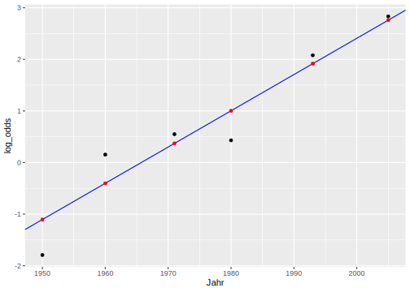
Genau wie bei der linearen Regression können wir predict() auch benutzen, um uns die log odds Werte vorhersagen zu lassen für x-Werte, die nicht im originalen Datensatz vorkommen. Wenn wir uns zum Beispiel die Logit-Werte für die Jahre 2000 bis 2020 schätzen lassen wollen, funktioniert das wie folgt:
## 1 2 3 4 5 6 7 8 9
## 2.409 2.479 2.549 2.620 2.690 2.760 2.830 2.901 2.971
## 10 11 12 13 14 15 16 17 18
## 3.041 3.111 3.182 3.252 3.322 3.393 3.463 3.533 3.603
## 19 20 21
## 3.674 3.744 3.8146.2.3 Regression mit glm()
Das Ergebnis der Funktion glm() ist ein Objekt mit den Klassen “glm” und “lm”:
## [1] "glm" "lm"Nun wenden wir die summary()-Funktion auf das Ergebnis der logistischen Regression lreg an und schauen uns das Ergebnis wieder Zeile für Zeile an:
##
## Call:
## glm(formula = as.factor(Vokal) ~ Jahr, family = binomial, data = ovokal)
##
## Coefficients:
## Estimate Std. Error z value Pr(>|z|)
## (Intercept) -138.1174 20.9988 -6.58 4.8e-11 ***
## Jahr 0.0703 0.0107 6.59 4.3e-11 ***
## ---
## Signif. codes:
## 0 '***' 0.001 '**' 0.01 '*' 0.05 '.' 0.1 ' ' 1
##
## (Dispersion parameter for binomial family taken to be 1)
##
## Null deviance: 290.57 on 219 degrees of freedom
## Residual deviance: 229.45 on 218 degrees of freedom
## AIC: 233.5
##
## Number of Fisher Scoring iterations: 4Die Zusammengassung beginnt wieder mit dem Call, also der Funktion, die verwendet wurde.
6.2.3.1 Deviance Residuals
Die Deviance Residuals sind die Unterschiede zwischen den tatsächlichen und den geschätzten Werten. Es werden uns hier wieder Minimum, Maximum, Median und der Wertebereich der mittleren 50% der log odds Werte angezeigt:
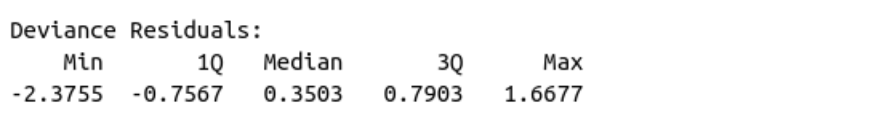
Im Gegensatz zu den Residuals aus der linearen Regression werden die Deviance Residuals aber als Logits ausgedrückt, das bedeutet u.a. dass sie nicht normalverteilt sein müssen. Wie bei den Residuals, können wir uns die Deviance Residuals mit resid() ausgeben lassen:
## 1 2 3 4 5 6
## -0.7566 -0.7566 -0.7566 -0.7566 -0.7566 -0.7566
## 7 8 9 10 11 12
## -0.7566 -0.7566 -0.7566 -0.7566 -0.7566 -0.7566
## 13 14 15 16 17 18
## -0.7566 -0.7566 -0.7566 -0.7566 -0.7566 -0.7566
## 19 20 21 22 23 24
## -0.7566 -0.7566 -0.7566 -0.7566 -0.7566 -0.7566
## 25 26 27 28 29 30
## -0.7566 -0.7566 -0.7566 -0.7566 -0.7566 -0.7566
## 31 32 33 34 35 36
## 1.6677 1.6677 1.6677 1.6677 1.6677 -1.0123
## 37 38 39 40 41 42
## -1.0123 -1.0123 -1.0123 -1.0123 -1.0123 -1.0123
## 43 44 45 46 47 48
## -1.0123 -1.0123 -1.0123 -1.0123 -1.0123 -1.0123
## 49 50 51 52 53 54
## -1.0123 -1.0123 -1.0123 -1.0123 -1.0123 1.3521
## 55 56 57 58 59 60
## 1.3521 1.3521 1.3521 1.3521 1.3521 1.3521
## 61 62 63 64 65 66
## 1.3521 1.3521 1.3521 1.3521 1.3521 1.3521
## 67 68 69 70 71 72
## 1.3521 1.3521 1.3521 1.3521 1.3521 1.3521
## 73 74 75 76 77 78
## 1.3521 1.3521 -1.3386 -1.3386 -1.3386 -1.3386
## 79 80 81 82 83 84
## -1.3386 -1.3386 -1.3386 -1.3386 -1.3386 -1.3386
## 85 86 87 88 89 90
## -1.3386 -1.3386 -1.3386 -1.3386 -1.3386 1.0244
## 91 92 93 94 95 96
## 1.0244 1.0244 1.0244 1.0244 1.0244 1.0244
## 97 98 99 100 101 102
## 1.0244 1.0244 1.0244 1.0244 1.0244 1.0244
## 103 104 105 106 107 108
## 1.0244 1.0244 1.0244 1.0244 1.0244 1.0244
## 109 110 111 112 113 114
## 1.0244 1.0244 1.0244 1.0244 1.0244 1.0244
## 115 116 117 118 119 120
## 1.0244 -1.6223 -1.6223 -1.6223 -1.6223 -1.6223
## 121 122 123 124 125 126
## -1.6223 -1.6223 -1.6223 -1.6223 -1.6223 -1.6223
## 127 128 129 130 131 132
## -1.6223 -1.6223 0.7903 0.7903 0.7903 0.7903
## 133 134 135 136 137 138
## 0.7903 0.7903 0.7903 0.7903 0.7903 0.7903
## 139 140 141 142 143 144
## 0.7903 0.7903 0.7903 0.7903 0.7903 0.7903
## 145 146 147 148 149 150
## 0.7903 0.7903 0.7903 0.7903 -2.0269 -2.0269
## 151 152 153 154 155 156
## -2.0269 -2.0269 0.5238 0.5238 0.5238 0.5238
## 157 158 159 160 161 162
## 0.5238 0.5238 0.5238 0.5238 0.5238 0.5238
## 163 164 165 166 167 168
## 0.5238 0.5238 0.5238 0.5238 0.5238 0.5238
## 169 170 171 172 173 174
## 0.5238 0.5238 0.5238 0.5238 0.5238 0.5238
## 175 176 177 178 179 180
## 0.5238 0.5238 0.5238 0.5238 0.5238 0.5238
## 181 182 183 184 185 186
## 0.5238 0.5238 0.5238 0.5238 -2.3755 -2.3755
## 187 188 189 190 191 192
## 0.3503 0.3503 0.3503 0.3503 0.3503 0.3503
## 193 194 195 196 197 198
## 0.3503 0.3503 0.3503 0.3503 0.3503 0.3503
## 199 200 201 202 203 204
## 0.3503 0.3503 0.3503 0.3503 0.3503 0.3503
## 205 206 207 208 209 210
## 0.3503 0.3503 0.3503 0.3503 0.3503 0.3503
## 211 212 213 214 215 216
## 0.3503 0.3503 0.3503 0.3503 0.3503 0.3503
## 217 218 219 220
## 0.3503 0.3503 0.3503 0.35036.2.3.2 Coefficients
Es folgt wieder die Tabelle der Regressionskoeffizienten:
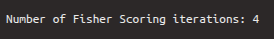
In der ersten Zeile dieser Tabelle stehen die Kennzahlen für Intercept, in der zweiten für Slope. In der ersten Spalte finden sich wieder die Estimates (Schätzungen) für die Regressionskoeffizienten, die mittels eines maximum likelihood Verfahrens ermittelt wurden. In der zweiten Spalte steht der Standard-Error, der beschreibt, wie verlässlich die Schätzungen sind (je kleiner desto besser). Auf die beiden Schätzungen wurde ein Wald Test durchgeführt, der prüft, ob sich die Schätzungen signifikant von Null unterscheiden. Das Ergebnis dieses Tests ist der z-value, der sich auch aus der Division von Estimate und Standard Error berechnen lässt. Hierbei interessiert uns vor allem die zweite Zeile, deren z-Wert und p-Wert zeigen, ob die unabhängige Variable Jahr in signifikantem Maß dazu beiträgt, die log odds Werte zu erklären. Wenn der p-Wert, der in der vierten Spalte steht, kleiner ist als 0.05 (siehe auch die Signifikanzniveau-Sternchen), dann unterscheidet sich der Koeffizient signifikant von Null. Im Fall der abhängigen Variable sehen wir, dass der p-Wert kleiner ist als 0.001, d.h. die Variable ist ein guter Prädiktor für die log odds.
Standardmäßig wird nach der Coefficients-Tabelle ein Statement über den Dispersion parameter gedruckt. Das können wir ignorieren.
6.2.3.3 Deviances und AIC
In den folgenden zwei Zeilen stehen die Null deviance und die Residual deviance sowie das AIC (Akaike Information Criterion):

Die Null deviance beschreibt, wie gut ein Modell ohne unabhängige Variablen die Daten erklären würde. Ein Modell ohne unabhängige Variablen wird nur durch das Intercept charakterisiert. Für sich alleine genommen ist die Null deviance schwierig zu interpretieren. Deshalb steht gleich darunter die Residual deviance, die beschreibt, wie gut das tatsächlich verwendete Modell die Daten erklären würde. Aus der Differenz zwischen Null und Residual Deviance lässt sich also erkennen, wie hilfreich unsere unabhängige Variable in dem Modell ist. Die Freiheitsgrade berechnen sich übrigens aus der Anzahl der Beobachtungen im Data Frame minus die Anzahl der Parameter im Modell. Bei der Null deviance gibt es nur einen Parameter (Intercept), bei der Residual deviance gibt es zwei (Intercept und unabhängige Variable). Je kleiner die Deviances (also die Abweichungen zwischen den tatsächlichen und den geschätzten Werten) sind, desto besser.
AIC steht für Akaike Information Criterion und ist vor allem hilfreich, wenn man verschiedene Regressionsmodelle für dasselbe Datenset vergleichen will (wenn man also z.B. für ovokal noch ein Modell mit mehr als einer unabhängigen Variable berechnen würde). Je kleiner AIC, desto besser beschreibt das Modell die Varianz in den Daten. Da wir hier nur das eine Modell haben, ist AIC für uns uninteressant.
6.2.4 Der Chi-Square Test & Ergebnisse berichten
Bei der linearen Regression haben wir als Prüfstatistik einen F-Test durchgeführt. Anstelle dessen führen wir bei der logistischen Regression einen Chi-Square Test durch, der prüft, ob das Modell einen signifikanten Anteil der Varianz in der abhängigen Variable erklärt. Da wir oben in der Coefficients-Tabelle schon gesehen haben, dass der Wald Test für unsere unabhängige Variable signifikant war, wird wahrscheinlich auch das gesamte Modell signifikant sein. Wir verwenden hierfür die Funktion anova() mit dem Argument test = "Chisq:
## Analysis of Deviance Table
##
## Model: binomial, link: logit
##
## Response: as.factor(Vokal)
##
## Terms added sequentially (first to last)
##
##
## Df Deviance Resid. Df Resid. Dev Pr(>Chi)
## NULL 219 291
## Jahr 1 61.1 218 230 5.4e-15 ***
## ---
## Signif. codes:
## 0 '***' 0.001 '**' 0.01 '*' 0.05 '.' 0.1 ' ' 1Das Ergebnis des Chi-Square Tests hat zwei Zeilen, eine für das Null-Modell (nur Intercept) und das andere für das Modell mit der unabhängigen Variable Jahr. In der Spalte Resid. Df finden sich die Freiheitsgrade für die Null und Residual Deviance, die wiederum in der Spalte Resid. Dev. angegeben werden. Diese Werte wurden in der Zusammenfassung des logistischen Modells in Kurzform berichtet. Uns interessiert aus dem Ergebnis des Chi-Square Tests vor allem der Wert in der Spalte Pr(>Chi), die den p-Wert enthält. Wenn dieser Wert kleiner ist als 0.05 (siehe auch Signifikanzsternchen), dann erklärt das Modell einen signifikanten Anteil der Variation in den Daten. Nachdem wir den Chi-Square Test durchgeführt haben, berichten wir folgende Kennzahlen: \(\chi^2\)[Df] = Deviance, p < Signifikanzniveau.
Unsere Ausgangsfrage war: Wird die Aussprache des Vokals (hoch vs. tief) vom Jahr beeinflusst?
Nun können wir also berichten: Jahr hatte einen signifikanten Einfluss auf die Proportion von ‘lost’ mit tiefem/hohem Vokal (\(\chi^2\)[1] = 61.1, p < 0.001).
6.3 Die Sigmoidal-Funktion und der Umkipppunkt
Die Ergebnisse einer logistischen Regression haben wir oben im Logit-Raum präsentiert. Man kann jedoch auch den y-Achsenabschnitt und die Steigung verwenden, um statt der log odds auf der y-Achse Proportionen abzubilden. In diesem Fall ist die Regressionslinie nicht mehr gerade, sondern sigmoidal (s-förmig). Die Formel für die Sigmoid-Funktion lautet:
\(f(x) = \frac{e^{bx+k}}{1 + e^{bx+k}}\)
In dieser Formel ist \(e\) ist die Exponentialfunktion, \(b\) und \(k\) sind die Steigung und das Intercept. Je größer die Steigung \(b\) ist (in der Abbildung: 1, 0.5, 0.25), desto steiler kippt die Sigmoid-Kurve (schwarz, rot, grün):

Wenn die Steigung Null ist, bekommt man eine gerade Linie um den Wert 0.5 auf der y-Achse. Wenn man bei einer Steigung von \(b = 0\) den y-Achsenabschnitt \(k\) verändert (in der Abbildung: 0, 1, -1), führt das dazu, dass die gerade horizontale Linie nach oben oder unten verschoben wird (schwarz, rot, grün):
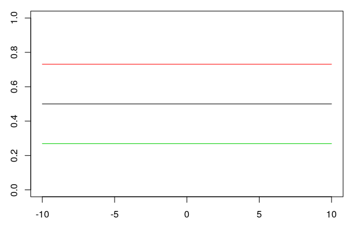
6.3.1 Der Umkipppunkt
Der Umkipppunkt ist der Punkt, zu dem die Sigmoid-Kurve am steilsten ist. An diesem Punkt ist der Wert auf der y-Achse (die Proportion) immer 0.5 (unten als horizontale Linie). Den x-Wert des Umkipppunkts berechnet man mit \(\frac{-k}{b}\). Für \(k = 4\) und \(b = 0.8\) wäre das zum Beispiel \(-4/0.8 = -5\) (hier als gestrichelte Linie):
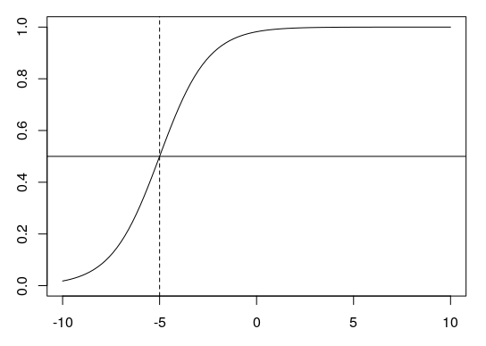
6.3.2 Proportionen abbilden
Für unser Beispiel oben wollen wir nun Proportionen abbilden und anschließend eine sigmoidale Regressionskurve durch unsere Daten legen. Wir nehmen unseren zusammengefassten Data Frame df und berechnen die Proportion von \(P\) (den Anteil von “Erfolgen”) pro Jahr:
## # A tibble: 6 × 5
## Jahr P Q log_odds Proportion
## <int> <int> <int> <dbl> <dbl>
## 1 1950 5 30 -1.79 0.143
## 2 1960 21 18 0.154 0.538
## 3 1971 26 15 0.550 0.634
## 4 1980 20 13 0.431 0.606
## 5 1993 32 4 2.08 0.889
## 6 2005 34 2 2.83 0.944Für das Jahr 1950 liegt der Anteil an “Erfolgen” (wo also der Vokal /o/ tief produziert wurde) bei 14.3%, für das Jahr 1960 dann schon bei 53.8% usw. Diese Proportionen in der neu angelegten Spalte df$Proportion können wir jetzt plotten und dann mittels geom_smooth() eine sigmoidale Regressionslinie durch die Daten legen. Die Funktion glm(), die von geom_smooth(method = "glm") verwendet wird, braucht als Argument aber noch family = binomial. Deshalb geben wir geom_smooth() noch das Argument method.args, das dieses Argument für die glm()-Funktion definiert.
ggplot(df) +
aes(x = Jahr, y = Proportion) +
geom_point() +
geom_smooth(method = "glm", se = F, method.args = list(family = binomial))## `geom_smooth()` using formula = 'y ~ x'## Warning in eval(family$initialize): non-integer
## #successes in a binomial glm!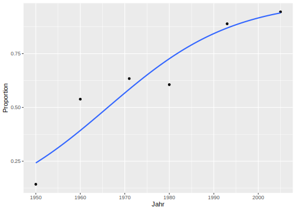
In dieser Abbildung ist das vollständige “S” der sigmoidalen Kurve nicht zu erkennen, weil unser Ausschnitt auf der x-Achse zu klein ist. Wir können uns aber einfach weitere Proportionswerte mit predict() berechnen. Wie wir vorhin gesehen haben, gibt uns predict() aber die log odds aus, und nicht die Proportionen. Die Proportionen erhalten wir, wenn wir in predict() das Argument type = "response" nutzen:
## 1 2 3 4 5 6 7
## 0.2489 0.2489 0.2489 0.2489 0.2489 0.2489 0.2489
## 8 9 10 11 12 13 14
## 0.2489 0.2489 0.2489 0.2489 0.2489 0.2489 0.2489
## 15 16 17 18 19 20 21
## 0.2489 0.2489 0.2489 0.2489 0.2489 0.2489 0.2489
## 22 23 24 25 26 27 28
## 0.2489 0.2489 0.2489 0.2489 0.2489 0.2489 0.2489
## 29 30 31 32 33 34 35
## 0.2489 0.2489 0.2489 0.2489 0.2489 0.2489 0.2489
## 36 37 38 39 40 41 42
## 0.4009 0.4009 0.4009 0.4009 0.4009 0.4009 0.4009
## 43 44 45 46 47 48 49
## 0.4009 0.4009 0.4009 0.4009 0.4009 0.4009 0.4009
## 50 51 52 53 54 55 56
## 0.4009 0.4009 0.4009 0.4009 0.4009 0.4009 0.4009
## 57 58 59 60 61 62 63
## 0.4009 0.4009 0.4009 0.4009 0.4009 0.4009 0.4009
## 64 65 66 67 68 69 70
## 0.4009 0.4009 0.4009 0.4009 0.4009 0.4009 0.4009
## 71 72 73 74 75 76 77
## 0.4009 0.4009 0.4009 0.4009 0.5917 0.5917 0.5917
## 78 79 80 81 82 83 84
## 0.5917 0.5917 0.5917 0.5917 0.5917 0.5917 0.5917
## 85 86 87 88 89 90 91
## 0.5917 0.5917 0.5917 0.5917 0.5917 0.5917 0.5917
## 92 93 94 95 96 97 98
## 0.5917 0.5917 0.5917 0.5917 0.5917 0.5917 0.5917
## 99 100 101 102 103 104 105
## 0.5917 0.5917 0.5917 0.5917 0.5917 0.5917 0.5917
## 106 107 108 109 110 111 112
## 0.5917 0.5917 0.5917 0.5917 0.5917 0.5917 0.5917
## 113 114 115 116 117 118 119
## 0.5917 0.5917 0.5917 0.7318 0.7318 0.7318 0.7318
## 120 121 122 123 124 125 126
## 0.7318 0.7318 0.7318 0.7318 0.7318 0.7318 0.7318
## 127 128 129 130 131 132 133
## 0.7318 0.7318 0.7318 0.7318 0.7318 0.7318 0.7318
## 134 135 136 137 138 139 140
## 0.7318 0.7318 0.7318 0.7318 0.7318 0.7318 0.7318
## 141 142 143 144 145 146 147
## 0.7318 0.7318 0.7318 0.7318 0.7318 0.7318 0.7318
## 148 149 150 151 152 153 154
## 0.7318 0.8718 0.8718 0.8718 0.8718 0.8718 0.8718
## 155 156 157 158 159 160 161
## 0.8718 0.8718 0.8718 0.8718 0.8718 0.8718 0.8718
## 162 163 164 165 166 167 168
## 0.8718 0.8718 0.8718 0.8718 0.8718 0.8718 0.8718
## 169 170 171 172 173 174 175
## 0.8718 0.8718 0.8718 0.8718 0.8718 0.8718 0.8718
## 176 177 178 179 180 181 182
## 0.8718 0.8718 0.8718 0.8718 0.8718 0.8718 0.8718
## 183 184 185 186 187 188 189
## 0.8718 0.8718 0.9405 0.9405 0.9405 0.9405 0.9405
## 190 191 192 193 194 195 196
## 0.9405 0.9405 0.9405 0.9405 0.9405 0.9405 0.9405
## 197 198 199 200 201 202 203
## 0.9405 0.9405 0.9405 0.9405 0.9405 0.9405 0.9405
## 204 205 206 207 208 209 210
## 0.9405 0.9405 0.9405 0.9405 0.9405 0.9405 0.9405
## 211 212 213 214 215 216 217
## 0.9405 0.9405 0.9405 0.9405 0.9405 0.9405 0.9405
## 218 219 220
## 0.9405 0.9405 0.9405Das sind jetzt wieder die geschätzten Werte für alle 220 Beobachtungen im originalen Data Frame. Wir wollen nun ein paar Schätzungen für die Jahre vor 1950 und nach 2010. Also geben wir der predict()-Funktion auch noch einen Data Frame mit den gewünschten Jahreszahlen:
more_props <- predict(lreg, data.frame(Jahr = c(1910, 1920, 1930, 1940, 2020, 2030)), type = "response")
more_props## 1 2 3 4 5 6
## 0.01955 0.03871 0.07519 0.14101 0.97842 0.98919Wir bauen uns nun einen Data Frame, der nur Jahr und Proportionen enthält, und zwar aus dem originalen Data Frame und den soeben geschätzten Werten:
Jahr <- c(df$Jahr, 1910, 1920, 1930, 1940, 2020, 2030)
Proportion <- c(df$Proportion, more_props)
df <- data.frame(Jahr, Proportion)
ggplot(df) +
aes(x = Jahr, y = Proportion) +
geom_point() +
geom_smooth(method = "glm", se = F, method.args = list(family = binomial))## `geom_smooth()` using formula = 'y ~ x'## Warning in eval(family$initialize): non-integer
## #successes in a binomial glm!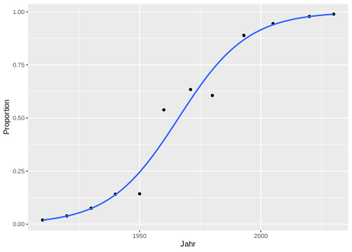
Wir können für diese Daten auch noch den Umkipppunkt berechnen und zwar aus den oben bereits gespeicherten coefs:
## (Intercept)
## 1966Das Jahr, in dem sich die Aussprache von /o/ in der Received Pronunciation von “hoch” in “tief” wandelt, ist also laut unserem Modell ungefähr das Jahr 1965.
6.4 Umkipppunkte in Perzeptionstests
Umkipppunkte werden häufig in Perzeptionstests verwendet, die wie folgt konstruiert werden: Wir haben ein 11-stufiges Kontinuum zwischen /pUp/ und /pYp/ synthetisiert. Phonetisch betrachtet ist der Unterschied zwischen /U/ und /Y/ der zweite Formant, der bei /U/ niedrig und bei /Y/ hoch ist. Diesen F2-Wert haben wir im Kontinuum also in 11 Schritten langsam verändert. Das erste und letzte Token aus diesem Kontinuum klingen sehr eindeutig wie PUPP oder PÜPP, dazwischen kann es aber schwierig für Hörer sein, zwischen PUPP und PÜPP zu unterscheiden. Nun wurde einigen Probanden jedes Token aus dem Kontinuum in randomisierter Reihenfolge vorgespielt und der Proband musste entscheiden, ob es sich um PUPP oder PÜPP handelte. Uns interessiert, ab welchem F2-Wert die Wahrnehmung der Probanden von PUPP auf PÜPP umschaltet. Anders gesagt: Uns interessiert hier der Umkipppunkt.
Daten aus einem solchen Perzeptionsexperiment haben wir im Data Frame pvp gespeichert:
## Vpn F2 Urteil
## 1 VP18 1239 Y
## 2 VP18 1088 Y
## 3 VP18 803 U
## 4 VP18 956 U
## 5 VP18 1328 Y
## 6 VP18 861 U## NULL## [1] 1239 1088 803 956 1328 861 989 1121 808 1310
## [11] 1436Wir erwarten, dass die Probanden mit steigendem F2-Wert eher /Y/ als /U/ hören, also kodieren wir das Urteil /Y/ als Erfolg und /U/ als Misserfolg:
## Vpn F2 Urteil Erfolg Misserfolg
## 1 VP18 1239 Y TRUE FALSE
## 2 VP18 1088 Y TRUE FALSE
## 3 VP18 803 U FALSE TRUE
## 4 VP18 956 U FALSE TRUE
## 5 VP18 1328 Y TRUE FALSE
## 6 VP18 861 U FALSE TRUENun verwenden wir wieder dplyr, um \(P\) und \(Q\) zu berechnen:
## # A tibble: 11 × 3
## F2 P Q
## <int> <int> <int>
## 1 803 0 10
## 2 808 0 10
## 3 861 0 10
## 4 956 0 10
## 5 989 0 10
## 6 1088 2 8
## 7 1121 4 6
## 8 1239 9 1
## 9 1310 9 1
## 10 1328 10 0
## 11 1436 10 0Anschließend berechnen wir die Proportionen von \(P\) und \(Q\) und plotten die sigmoidale Regressionslinie in den Daten:
## # A tibble: 11 × 4
## F2 P Q Proportionen
## <int> <int> <int> <dbl>
## 1 803 0 10 0
## 2 808 0 10 0
## 3 861 0 10 0
## 4 956 0 10 0
## 5 989 0 10 0
## 6 1088 2 8 0.2
## 7 1121 4 6 0.4
## 8 1239 9 1 0.9
## 9 1310 9 1 0.9
## 10 1328 10 0 1
## 11 1436 10 0 1ggplot(df) +
aes(x = F2, y = Proportionen) +
geom_point() +
geom_smooth(method = "glm", se = F, method.args = list(family = binomial))## `geom_smooth()` using formula = 'y ~ x'## Warning in eval(family$initialize): non-integer
## #successes in a binomial glm!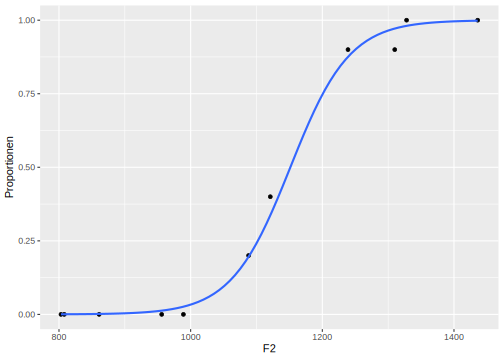
Um den Umkipppunkt dieser Sigmoid-Kurve zu ermitteln, berechnen wir das Generalized Linear Model:
Mit den geschätzten Regressionskoeffizienten können wir jetzt den perzeptiven Umkipppunkt der Probanden berechnen:
## (Intercept)
## 1151Das heißt ab einem F2-Wert von ca. 1151 Hz hören die Probanden eher PÜPP als PUPP.
Zuletzt wollen wir noch herausfinden, ob die Urteile der Probanden tatsächlich durch F2 beeinflusst wurden. Dafür nutzen wir den Chi-Square Test:
## Analysis of Deviance Table
##
## Model: binomial, link: logit
##
## Response: as.factor(Urteil)
##
## Terms added sequentially (first to last)
##
##
## Df Deviance Resid. Df Resid. Dev Pr(>Chi)
## NULL 109 148.1
## F2 1 109 108 39.1 <2e-16 ***
## ---
## Signif. codes:
## 0 '***' 0.001 '**' 0.01 '*' 0.05 '.' 0.1 ' ' 1Wir berichten: Die Proportion von pUp/pYp-Antworten wurde signifikant von F2 beeinflusst (\(\chi^2\)[1] = 109.0, p < 0.001).
6.5 Kategorialer unabhängiger Faktor
Die logistische Regression kann auf eine ähnliche Weise verwendet werden, wenn die unabhängige Variable kategorial ist. Der wesentliche Unterschied ist, dass kein Umkipppunkt berechnet und kein Sigmoid abgebildet werden muss.
Im Data Frame sz haben wir Informationen darüber abgespeichert, wie 20 Versuchspersonen das Wort “Sonne” aussprechen: entweder mit initialem [s] (stimmlos) oder initialem [z] (stimmhaft). Von den 20 Versuchspersonen kamen 9 aus Bayern und 11 aus Schleswig-Holstein:
## Frikativ Dialekt Vpn
## 1 z SH S1
## 2 z SH S2
## 3 z SH S3
## 4 z SH S4
## 5 s SH S5
## 6 s SH S6Unsere Frage ist nun: Wird die Stimmhaftigkeit (zwei Stufen: s, z) vom Dialekt (zwei Stufen: BY, SH) beeinflusst?
Da beide Variablen in diesem Fall kategorial sind, können wir einen Barplot erstellen, um einen Eindruck von den Daten zu gewinnen:
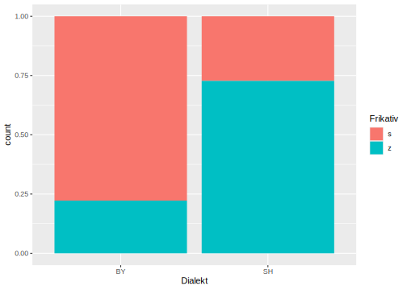
Es sieht sehr danach aus, dass der initiale Frikativ deutlich häufiger stimmlos in Bayern als in Schleswig-Holstein produziert wird. Nun wenden wir, genau wie zuvor, eine logistische Regression mit anschließendem Chi-Square Test auf die Daten an:
sz.glm <- glm(as.factor(Frikativ) ~ Dialekt, family = binomial, data = sz)
anova(sz.glm, test = "Chisq")## Analysis of Deviance Table
##
## Model: binomial, link: logit
##
## Response: as.factor(Frikativ)
##
## Terms added sequentially (first to last)
##
##
## Df Deviance Resid. Df Resid. Dev Pr(>Chi)
## NULL 19 27.7
## Dialekt 1 5.3 18 22.4 0.021 *
## ---
## Signif. codes:
## 0 '***' 0.001 '**' 0.01 '*' 0.05 '.' 0.1 ' ' 1Der Chi-Square Test zeigt: Die Verteilung von stimmhaftem und stimmlosen /s/ in Worten wie Sonne wurde signifikant vom Dialekt beeinflusst (\(\chi^2\)[1] = 5.3, p < 0.05).